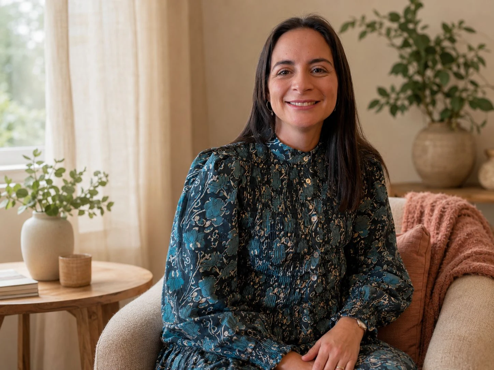

Embarazo
Miedos, preocupaciones que no ceden o una sensación constante de alerta durante la gestación. También el embarazo después de una pérdida.
Acompañamiento psicológico especializado en embarazo, posparto, transición a la maternidad y duelo gestacional y perinatal. Atención online en Chile.

El cansancio, la ansiedad, lo que cambió en tu cuerpo, en tu pareja, en tu trabajo o en cómo te reconoces. Lo que no se parece a lo que imaginabas. Y cuando hay una pérdida, un dolor que se nombra poco. Todo eso merece un espacio propio, con alguien que conoce esta etapa.
No necesitas saber cuál es el tuyo antes de consultar: la primera sesión sirve justamente para eso.
Miedos, preocupaciones que no ceden o una sensación constante de alerta durante la gestación. También el embarazo después de una pérdida.
El primer año: el agotamiento, la tristeza que no cede, la desconexión con el bebé o con una misma, y los cambios de identidad, pareja y trabajo que nadie te contó del todo.
Pérdidas durante el embarazo, al nacer o en los primeros meses de vida. Un dolor que la cultura nombra poco y que necesita espacio propio.
También acompaño el vínculo con el bebé y momentos difíciles sin un diagnóstico específico. Ver todas las áreas
Psicóloga Clínica · Perinatal
Acompaño a mujeres mientras la maternidad cambia la identidad, el cuerpo, los vínculos y la relación con el mundo, incluyendo historias personales antiguas que muchas veces no estaban nombradas.
Mi trabajo consiste en ofrecerte un espacio clínico donde eso que está ocurriendo pueda pensarse y decirse, a tu ritmo y con el cuidado que merece.
“Escuchar sin apuro es la primera intervención clínica.”
Sin prisa. Cada sesión respeta el tiempo que tu historia necesita, sin atajos ni recetas.
Sin juicio. No hay una única forma correcta de vivir la maternidad. Puedes hablar con honestidad, incluso de lo que cuesta decir.
Contigo. El proceso se construye en conjunto, con transparencia sobre objetivos, enfoque y tiempos, y en coordinación con tu equipo de salud cuando corresponde.
Integro enfoques cognitivo-conductual, sistémico y específicos en salud mental perinatal.
Importante. Si estás en crisis o con pensamientos de hacerte daño, llama a *4141 (Línea de Prevención del Suicidio) o acude al servicio de urgencia más cercano.
Una primera sesión basta para saber si este es el espacio que buscas.
Reservar sesión¿Prefieres escribir antes? Escríbeme